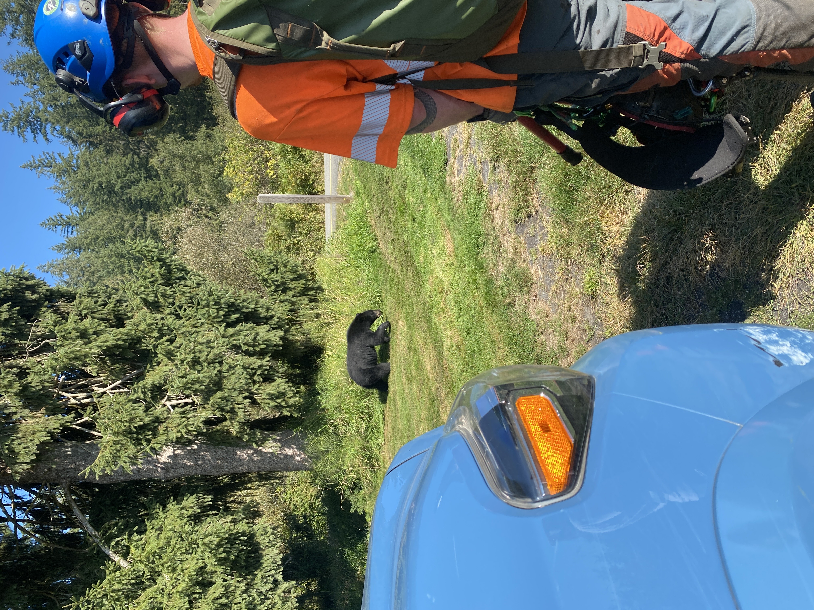
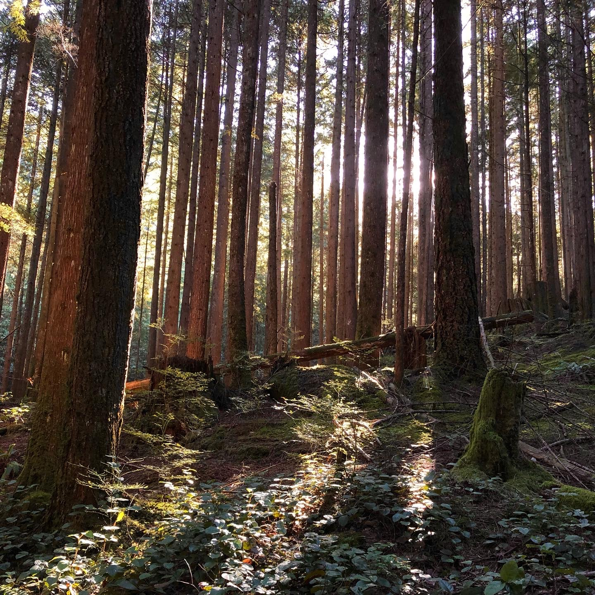
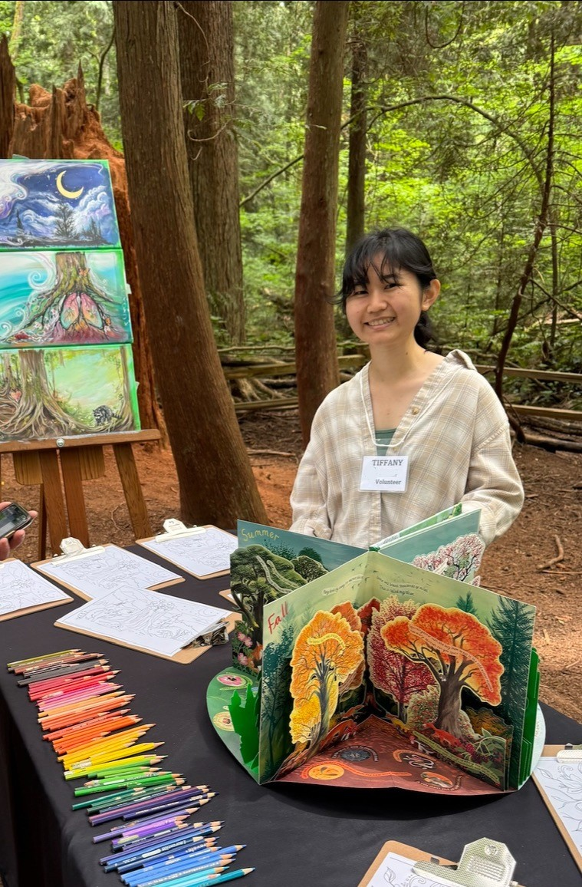

About Me
My journey
BSc in Natural Resources Conservation | Science & Management
My journey




Qualitative comparison of effects on ungulate spatial distribution in an African savanna from the interaction between tree cover and African wild dogs, with 3 hypotheses.
In the latter part of the summer, I cleaned previous years' data (from camera traps, GPS collars, and tree cover estimates), merged data from different platforms, and used a negative binomial model in R to look further into the effects of the increased presence of African wild dogs on ungulate (prey) spatial distribution.



Conservation science, decision-making, policy, and economics, forestry, fish, watershed, and wildlife management, and linguistics
Conservation science, wildlife ecology and management, hydroglogy, soil science, geomorphology, geology, geography, climatology, biogeography.
Remote sensing (ENVI software, photographic analysis & aerial photo interpretation, basic digital image processing, and LIDAR & RADAR image analysis), GIS (ArcGIS, QGIS), R, Microsoft Office.
Forest classification and silvics in forest management, forest plant biology and forest ecology, economics in forest management.
Fish conservation management, aquatic ecosystems and fish in forested watersheds, watershed hydrology, fluvial geomorphology, water politics.
Microeconomics, macroeconomics, and economics in forest and conservation management. Market and non-market values, forest investment analysis, economics of international trade issues, forest policy and economics issues.
Decision analysis with PrOACT, decision science frameworks and tools. Policies for biodiversity conservation. Indigenous Peoples' land and territorial rights, rights to Traditional Ecological Knowledge. Sustainable energy policy and governance.
Sustainability challenges of globalization and solutions. SDGs, sustainability certifications and labeling, corporate social responsibility, global governance, national policy, socially responsible investments, criteria for rating ESG performance.
Social change and inequality, environmental and conservation politics, history, ethics, and culture, different approaches to environmental management and sustainability.
Sociolinguistics, child language acquisition, introduction to phonetics and phonology, grammatical analysis, morphology, syntax, semantics, synchronic analysis and description.
{kind=link}